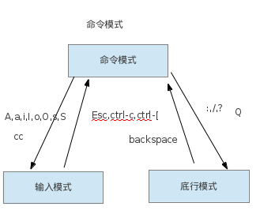

教你一个vim命令，你能折腾一个晚上，教会了你配置vim，你能为它折腾一辈子。
主要是要理解它是一个模式编辑器
具有６种基本模式和５种派生模式
* 基本模式
1. 普通模式 ( vim启动时的模式，这时你可以移动光标)
2. 插入模式 ( 这个模式故名思义就是插入字符串的，可以在普通模式下按i,I,A,a,S,s进入)
3. 可视模式 ( 可以说这个就是键盘的选择模式)
4. 选择模式 ( 这个模式就是用鼠标进行文本的高亮选择)
5. 命令行模式 ( 这个模式你可以执行一些vim的命令)
6. EX模式 ( 也就是执行多个vim的命令，命令行模式只会执行一个命令)* 派生模式
1. 插入普通模式 ( 执行一个普通模式的操作后就回到插入模式,ctrl-o进入)
2. 插入可视模式 ( 执行一个可视的操作，当选择区域取消时回到插入模式，ctrl-o进入普通模式选择一个可视的规则开始)
3. 插入的选择模式 ( 插入模式下面拖拽鼠标进入，当选区取消时时候，vim返回插入模式)
4. 替换模式 ( 替换一个字，或者一段文本。普通模式下面按r 或者R进入)也有人把它分为三种模式
1. 命令模式。
2. 插入模式。
3. 底行模式。它们之间的关系就像下图：

在linux下面一般都会已经安装有vim或者vi，你可以启动一个终端，输入vim或者vi来查看是否已经安装了。要是确实没有安装，你也可以安装它。可以使用源码安装和包安装。包安装会根据不同版本的系统用不同的安装方法：
#debian系列的系统
#网络
sudo apt-get install vim*
#源码安装
#安装编译时所需要用到的库
sudo apt-get install libncurses5-dev
# 安装Mercurial (用于下载vim源码包)
sudo apt-get install mercurial
# 下载vim源码
hg clone https://vim.googlecode.com/hg/ vim
# 进入源码包配置编译安装vim
cd vim
./configure \
--enable-pythoninterp=yes \
--enable-perlinterp=yes \
--enable-rubyinterp=yes \
--enable-luainterp=yes \
--enable-tclinterp \
--enable-xim \
--enable-multibyte \
--enable-sniff \
--enable-fontset \
--enable-cscope \
--enable-gtk2-check \
--with-features=huge \
#如果检查编译环境没有错，就会生成好配置环境。报错那也应该是依赖关系没有解决，安装上对应的依赖包重新生成配置环境就行了。
#编译并安装
make && sudo make install
#redhat系列的系统
网络安装
yum -y install vim*
#源码安装
#步骤与debian的一样。只是安装依赖包的命令不一样而已。
yum install ncurses-devel
yum install mercurial
hg clone https://vim.googlecode.com/hg/ vim
#剩下的步骤就可debian下面的一样了。windows下面的安装。那就是点击下一步，下一步就可以了。安装包可以在一般的软件安装软件(金山软件，360软件中心)中找到。 如果你不想用这些软件来安装，那么你可以到官网去下载。
安装完成后，linux系统下面就会多出一个vim命令
既然vim是linux下面的命令，那么就可以用 vim –help 来查看一下它的用法。
VIM - Vi IMproved 7.4 (2013 Aug 10, compiled Nov 7 2013 00:27:38)
用法: vim [参数] [文件 ..] 编辑指定的文件
或: vim [参数] - 从标准输入(stdin)读取文本
或: vim [参数] -t tag 编辑 tag 定义处的文件
或: vim [参数] -q [errorfile] 编辑第一个出错处的文件
参数:
-- 在这以后只有文件名
-g 使用图形界面 (同 "gvim")
-f 或 --nofork 前台: 启动图形界面时不 fork
-v Vi 模式 (同 "vi")
-e Ex 模式 (同 "ex")
-E Improved Ex mode
-s 安静(批处理)模式 (只能与 "ex" 一起使用)
-d Diff 模式 (同 "vimdiff")
-y 容易模式 (同 "evim"，无模式)
-R 只读模式 (同 "view")
-Z 限制模式 (同 "rvim")
-m 不可修改(写入文件)
-M 文本不可修改
-b 二进制模式
-l Lisp 模式
-C 兼容传统的 Vi: 'compatible'
-N 不完全兼容传统的 Vi: 'nocompatible'
-V[N][fname] Be verbose [level N] [log messages to fname]
-D 调试模式
-n 不使用交换文件，只使用内存
-r 列出交换文件并退出
-r (跟文件名) 恢复崩溃的会话
-L 同 -r
-A 以 Arabic 模式启动
-H 以 Hebrew 模式启动
-F 以 Farsi 模式启动
-T <terminal> 设定终端类型为 <terminal>
-u <vimrc> 使用 <vimrc> 替代任何 .vimrc
-U <gvimrc> 使用 <gvimrc> 替代任何 .gvimrc
--noplugin 不加载 plugin 脚本
-P[N] 打开 N 个标签页 (默认值: 每个文件一个)
-o[N] 打开 N 个窗口 (默认值: 每个文件一个)
-O[N] 同 -o 但垂直分割
+ 启动后跳到文件末尾
+<lnum> 启动后跳到第 <lnum> 行
--cmd <command> 加载任何 vimrc 文件前执行 <command>
-c <command> 加载第一个文件后执行 <command>
-S <session> 加载第一个文件后执行文件 <session>
-s <scriptin> 从文件 <scriptin> 读入正常模式的命令
-w <scriptout> 将所有输入的命令追加到文件 <scriptout>
-W <scriptout> 将所有输入的命令写入到文件 <scriptout>
-x 编辑加密的文件
-display <display> 将 vim 与指定的 X-server 连接
-X 不连接到 X Server
--remote <files> 如有可能，在 Vim 服务器上编辑文件 <files>
--remote-silent <files> 同上，找不到服务器时不抱怨
--remote-wait <files> 同 --remote 但会等待文件完成编辑
--remote-wait-silent <files> 同上，找不到服务器时不抱怨
--remote-tab[-wait][-silent] <files> As --remote but use tab page per file
--remote-send <keys> 送出 <keys> 到 Vim 服务器并退出
--remote-expr <expr> 在 Vim 服务器上求 <expr> 的值并打印结果
--serverlist 列出可用的 Vim 服务器名称并退出
--servername <name> 发送到或成为 Vim 服务器 <name>
--startuptime <file> Write startup timing messages to <file>
-i <viminfo> 使用 <viminfo> 取代 .viminfo
-h 或 --help 打印帮助(本信息)并退出
--version 打印版本信息并退出
gvim (Athena 版本) 可识别的参数:
-display <display> 在 <display> 上运行 vim
-iconic 启动后最小化
-background <color> 使用 <color> 作为背景色 (也可用 -bg)
-foreground <color> 使用 <color> 作为一般文字颜色 (也可用 -fg)
-font <font> 使用 <font> 作为一般字体 (也可用 -fn)
-boldfont <font> 使用 <font> 作为粗体字体
-italicfont <font> 使用 <font> 作为斜体字体
-geometry <geom> 使用 <geom> 作为初始位置 (也可用 -geom)
-borderwidth <width> 设定边框宽度为 <width> (也可用 -bw)
-scrollbarwidth <width> 设定滚动条宽度为 <width> (也可用 -sw)
-menuheight <height> 设定菜单栏高度为 <height> (也可用 -mh)
-reverse 使用反显 (也可用 -rv)
+reverse 不使用反显 (也可用 +rv)
-xrm <resource> 设定指定的资源里面的说明已经很详细了。你只需要去操作理解和验证就可以了。
我最经常使用的就是直接 vim filename
刚进入vim时，那是普通模式，此时你是无法对它进行输入的。只有你进入了插入模式，你才可以输入。 进入输入模式的方法是按以下的字母：
i 光标前插入
I 行首插入
a 光标后插入
A 行尾插入
o 当前行下面新建一行插入
O 当前行上面新建一行插入
s 删除当前光标下面的字符，并且插入
S 删除当前行并且插入当你输入完成时，要保存文件时。那么你需要从先从插入模式退出普通模式再进行保存，从输入模式到普通模式的按键是：
ESC (一般都是电脑中最左上角的那个按键 ，不知道你有没有用过这个一按键)
ctrl-c
ctrl-[其中”ctrl-c” 与EXC 和”ctrl-“是有点区别的__
你按了这些键后就已经从插入模式进入了普通模式。
你想要保存文件，那么你需要进入命令模式(底行模式) 输入 英文状态下面的冒号 : 进入命令模式后，输入”w” ，回车，此时文件就保存了，(如果没有文件名，它会提示你要输入文件名，此时你只需要在w空格后加上你要保存的路径加文件名就可以了，如果是在当前的文件夹下面，那么只需要加文件名就可以了) 回车后，文件就会被保存，并且回到普通模式当中。
要是这时你已经对文件已经操作完成了，不需要再编辑了，需要退出编辑。那么同样，你需要到普通模式再到命令模式，输入q回车，那vim就会退出了。如果你的文件有改动，还没有保存，它会提示你要先保存文件才可以退出，如果你确实是不想保存退出，那么你就需要在q后面加一个叹号。这时它就不会保存你的文件修改也会退出。
其中保存和退出这两个可以一起使用。即进入命令模式后：”wq” ，保存并且退出。
如果你要放弃当前的所有修改，这时你当然可以进入命令模式然后再按”q!”退出后再重新打开这一个文件。其实有一个更快的命令，那就是”e!”,这样它就会把上面那些的命令都执行了。
tips
如果你的文件已经有了文件名，你确实又是想保存并且退出，那么还有一个快捷键可以在普通模式下面用 ZZ总结
学到这里，相信你是可以用vim来:编辑文件,修改文件，保存文件。这些都是所有编辑器的基本功能。但是暂时看来，这样的一个编辑器比windows下面的记事本都要糟糕。为什么还要用它？但是我告诉你，如果你只是只用vim的这些功能，你真的是不要用vim了。下面就开始介绍一下它比其它编辑器操作方便的地方。如果你看了上面的内容，你应该知道vim是一个模式编辑器。那我们为什么要模式编辑器呢？因为vim的主要思想就是让你的手不用离开键盘也可 以做更多的操作。为了实现这一功能，就给vim设置了不同的模式，在不同的模式下面键盘的按键操作就会有不同的响应.所以在不同模式下面相同的 操作可能都会有不同的响应结果。所以在你用vim的时候，你应该要很清楚你当前是在什么样的模式下面。一些常用到的模式之间的转换上面已经介绍 到了。下面来谈一下各个模式下面的一些操作吧！＋ 普通模式 普通模式下面主要的任务就是： 1. 实现各个模式间的转换。 * 例如：我们想从插入模式转到命令模式，那么我们需要先从插入模式转到普通模式，再从普通模式转到命令模式。在没有配置的情况下面你是不可能直接从插入模式直接地转到命令模式的。(当然你可以自定义快捷键来实现这一功能) 2. 光标的快速定位。 * 要想vim给你带来提高编辑效率，那么这定位的方法你一定要熟练。例如你想要到行首，到行尾，向后一个字符，向前移动一个字符……只要你熟练这个定位的方法，你就可以不用鼠标来快速定位你想要编辑的位置了。下面是vim快速定位的按键及其对应的作用。
按键 作用
--------------------------------------------------------------------------------------------------------------
h 光标向前移动一个字
j 光标向下移动一行
k 光标向上移动一行
l 光标向后移动字
W,w 光标移动到下一个单词的开头,(中文的话就会移动一个小句)
E,e 光标移动到下一个单词结尾,(中文是以小句为单位)
B,b 光标移动到上一个单词的开头
0 移动到行首
$ 移动支行末
+ 移动到下一行开头
- 移动到上一行开头
( 移动到当前句子开头
) 移动到下一个句子开头
{ 移动到当前这一段开头
} 移动到下一段开头
[[ 移动到当前这一节的开头
]] 移动到下一节的开头
--------------------------------------------------------------------------------------------------------------
ctrl-f 往前滚动一整屏
ctrl-b 往后滚动一整屏
ctrl-d 往前滚动半屏
ctrl-u 往后滚动半屏
ctrl-e 往后滚动一行
ctrl-y 往前滚动一行
z<ENTER> 光标所在的行移动屏幕的顶端
z. 光标所在的行移动到屏幕中间
z- 光标所在的行移动到屏幕低端
gg 光标移动到文件的头部
G 光标移动到文件最尾的行
nG n为数字，光标移动到第n行(相当于命令行下面的n)
H 移动到屏幕顶端的行
M 移动到屏幕中央的行
L 移动到屏幕的底端的行
nH 移动到屏幕顶端往下的第n行
nL 移动到屏幕底端往上的第n行
^ 移动到当前行的第一个非空格处
n| 移动到当前行的第n列以上就是基本的移动的操作按键了。在分隔线上面的按键还是可以配合一些其它的动作，也可以在前面加一个量，如我想向下移动5行，这样你可以”jjjjj”连续按五个”j”,但是你还可以”5j”,这样就表示向下移动五行。其它的相似。删除光标行和下面的一行，你可以”dj”,(d表示要执行删除的操作，j表示要删除那里的);
在vim中，你可以在任何的文本位置打一个标记，然后你就可以能过标记来快速定位了。打标记的命令为：
m<a-zA-Z> //普通模式下面
:mark<a-zA-Z>
:k<a-zA-Z>
如何跳到标记位呢？
`+标记号其中有一些特殊的标记位。
‘ //跳转前的位置
" //最后编辑的位置"
[ //最后修改的位置的开头
] //最后修改的位置的结尾
如何删除标记？
:delmarks<a-zA-Z>tips
还有一个是行中的定位，f+想定位到的字符 ,如"fa",光标移动到下一个"a"出现的地方。如果想是到下一个"b"出现的地方，那就是"fb";如果想到上一个呢？那就是把小写的"f"换成大写的"F"就可以了。破坏总是要比修建容易，我们就先来说说删除吧！ 其实这里删除可是比较多的技巧：
dd 删除光标当前所在的行 dG 删除光标所在的行到文件尾。(按下d就是说向vim现一个删除的命令，G也就是上面所说到的定位) D 删除光标到行尾 x 删除光标所在的字。 X 删除光标前的字 s 删除光标所在的字，并进入到插入模式 S 删除光标所在的行，并进入到插入模式
y 复制选中的内容 yy 复制光标所在的行 Y 复制光标所在的行
p 粘贴到光标所在的行下面。 P 粘贴到光标所在的行上面。
这也就是简单的删除，剪切，复制，粘贴的用法。为什么说是简单的呢？因为还有一些高深的技巧。
ndw 或 ndW 删除光标处开始及其后的 n-1 个字符。 d0 删至行首。 d$ 删至行尾。 ndd 删除当前行及其后 n-1 行。 Ctrl+u 删除输入方式下所输入的文本。 x,y 删除与复制包含高亮区 dl 删除当前字符(与x命令功能相同) d0 删除到某一行的开始位置 d^ 删除到某一行的第一个字符位置(不包括空格或TAB字符) dw 删除到某个单词的结尾位置 d3w 删除到第三个单词的结尾位置 db 删除到某个单词的开始位置 dW 删除到某个以空格作为分隔符的单词的结尾位置 dB 删除到某个以空格作为分隔符的单词的开始位置 d7B 删除到前面7个以空格作为分隔符的单词的开始位置 d) 删除到某个语句的结尾位置 d4) 删除到第四个语句的结尾位置 d( 删除到某个语句的开始位置 d) 删除到某个段落的结尾位置 d{ 删除到某个段落的开始位置 d7{ 删除到当前段落起始位置之前的第7个段落位置 dd 删除当前行 d/text 删除从文本中出现“text”中所指定字样的位置，一直向前直到下一个该字样所出现的位置(但不包括该字样)之间的内容 dfc 删除从文本中出现字符“c”的位置，一直向前直到下一个该字符所出现的位置(包括该字符)之间的内容 dtc 删除当前行直到下一个字符“c”所出现位置之间的内容 D 删除到某一行的结尾 d$ 删除到某一行的结尾 5dd 删除从当前行所开始的5行内容 dL 删除直到屏幕上最后一行的内容 dH 删除直到屏幕上第一行的内容 dG 删除直到工作缓存区结尾的内容 d1G 删除直到工作缓存区开始的内容 ci{ 删除修改光标所在的{}中的所有内容,change in { 的简写 ca{ 删除修改光标所在的{}中的所有内容,包括{} ci” 删除修改光标所在的”“中的所有内容,change in ” 的简写 ca” 删除修改光标所在的”“中的所有内容,包括{} ci( 删除修改光标所在的()中的所有内容,change in ( 的简写 ca( 删除修改光标所在的()中的所有内容,包括{}
用过netbeans的人可能都会用过ctrl+shift+d这个快捷键。这个是粘贴历史中粘贴的内容。vim中同样也是可以做到这一点，不过相对来说不是那么方便。
vim会把你复制的内容放到十多个寄存器当中，只要你在粘贴前按上(“+寄存器的名字+p/P)vim就会把寄存器当中的内容粘贴上去了. 那如何查看寄存器中的内容呢? 答案是:用vim命令 reg
其中与删除复制相关的寄存器就是(数字寄存器,与” + ); ” 是最近的删除或者复制存放的寄存器
+ 是与系统共享的寄存器.
(随着你用vim的时间增加,你可能会发现在系统中其它地方复制的东西是无法直接用p,P粘贴上去的.这时你要用 “+p 或者”+P)
当你复制或者删除一条内容时,那保存上一次删除复制的内容就会放到0寄存器当中,0寄存器当中的内容又会放到1的寄存器当中,这样秩代下去,直到最后一个就掉失.
r(char) 替换一个字,替换完成了就会自动退出替换模式.
R 从光标处开始替换,直到按esc,ctrl-c 或者ctrl-[,为止
:%s/old/new/[c][g] 全文替换,把old字符串替换成new
:%s/\<word\>/replase/g \<标注单词的开头,\>单词的结尾ctrl-w 插入模式下面删除光标前的一个单词.
ctrl-u 插入模式下面删除光标到行首
u 普通模式下面的撤消
ctrl-r 普通模式下面的重做
ctrl-t 插入模式下面的一个shift缩进
>> 普通模式下面的行shift缩进
ctrl-i 插入模式下面相当于tab键
ctrl-o 上面说过,暂时进入普通模式
ctrl-v 进入可视块模式
. 普通模式下面重新做上一次的命令
ctrl-h 相当于backspace
= 格式化选区的代码
shift-J 普通模式下面合并选择的行
ctrl-a 光标下面,如果是数字则数字加1
shift-~ 光标下面的字母大小写转换,并且光标移到下一个字母
% 跳到括号,大括号,双引号,单引号的配对处另外:如果你对vim的其它命令熟悉,你完全可以自定义你想要的快捷键.(以后会有介绍的)_
如何编辑多文件？
:edit filename
//此当前的窗口就是新打开的文件，当文件不存在时就是一个新的文件。
如果你不记得文件名，但又不想退出去查看，那怎么办？
:edit . //只要把filename变成英文的.
//此时就进入到了文件的管理模式，在这里你可以做一切你在资源管理器所做的操作。
如何查看打开的文件？
:ls
//就可以查看到当前打开了那一些文件，和当前所编辑的文件。%a的为当前编辑的文件，前面的数字为当前文件所在的buffers ID
如何切换编辑文件？
:bn //当前buffers的下一个文件 buffers next的缩写
:bp //当前buffers的上一个文件 buffers previous的缩写
:nb //打开buffers ID 为n的文件
如何让文件名显示在文件的顶部？
:tabnew filename
_ tips_ edit可以缩写成evim手册中介绍得很详细了。
:help flode:help mksession
:help 'sessionoptions'
:help source
:help wviminfo
:help rviminfo
:help 'viminfo'新版的vim默认就是支持语法补全的
ctrl+x ctrl+* 其中*包括主要是普通模式下面ctrl+v进入可视块模式，然后纵向选定要添加前缀或者后缀的行，再然后大I或者大A进入插入模式，写上你要插入的前缀或者后缀。写完后<ESC>或者ctrl+[退回普通模式，这时vim会为你选定的行自动补上你想插入的前缀或者后缀。
块复制，故名思义就是一块内容的复制。当你是用块的方式复制，粘贴的时候也会是块的样式粘贴。vim的宏操作就是把你有规则的操作放在一个寄存器当中，然后你就可以快速的重复同样的操作。
使用方法：
1. 录制宏(定义)
在普通模式下面按小写的q，再按一个寄存器号（a-z),然后执行一连串你想重复的操作命令。最后返回普通模式，按q停止宏的录制。
2. 播放宏(使用)
@录制时存放的寄存器号。（要执行多次可以在前面加上一个你想执行的次数）